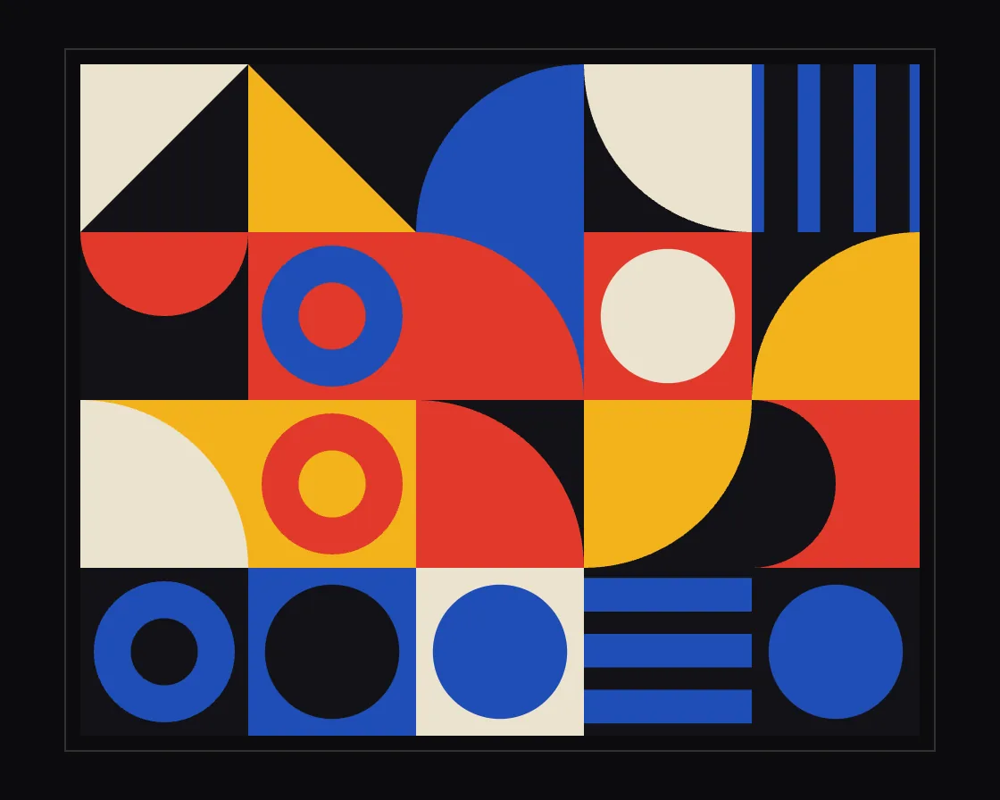

Bauhaus composition
Bauhaus composition is a Canvas effect: primary tiles that re-compose themselves through staggered, eased tweens. One plain JavaScript file with no dependencies; add it with npx motion-library add bauhaus.

Open it live, tune it and copy the code
What is Bauhaus composition?
A Bauhaus poster of coloured tiles where a third of the figures change in a ripple.
How does Bauhaus composition work?
Each change is a quarter turn, a shrink-and-grow or a ground wipe, with start times staggered 70 ms apart; five colours keep every frame on-grid.
How do I add Bauhaus composition to my website?
- In your project folder, run
npx motion-library add bauhaus. It writesanimations/bauhaus.js. Needs Node 18 or newer. - Import it and call it with a container element that has a size:
import fx from './animations/bauhaus.js'; const stop = fx(document.querySelector('#hero')); - Call
stop()to clean up, for example when a component unmounts.
Every setting below is also a flag, so you can install it already tuned: npx motion-library add bauhaus --rows 8.
What settings can I tweak?
| Setting | Flag | Default | Range | Step |
|---|---|---|---|---|
| Rows | --rows | 4 | 2 to 8 | 1 |
| Tempo | --tempo | 1 | 0.25 to 3 | 0.05 |
| Share that changes | --change | 0.3 | 0.05 to 1 | 0.05 |
Specifications
- Renderer
- Canvas 2D
- Category
- Generative & math
- Dependencies
- None
- File size
- 5.9 KB, unminified
- Interactive
- No: it plays on its own
- Reduced motion
- Respects prefers-reduced-motion
- Licence
- MIT-0: use it anywhere, no credit needed
Source code
// Bauhaus composition: a grid of square tiles, each a flat primary ground carrying one geometric figure (a disc, a
// half-disc, a quarter-disc, a right triangle, bars or a ring). Every beat a few tiles change: a figure turns a
// quarter, swaps for another, or the ground is wiped over with a new colour. Each change is its own eased tween,
// staggered across the tiles, so the poster re-composes itself without ever looking unsettled.
const PARAMS = { rows: 4, tempo: 1, change: 0.3 };
export default function (stage) {
const canvas = document.createElement('canvas');
canvas.style.cssText = 'position:absolute;inset:0;width:100%;height:100%;display:block';
stage.append(canvas);
const ctx = canvas.getContext('2d');
const reduce = matchMedia('(prefers-reduced-motion: reduce)').matches;
let W = 0, H = 0, D = 1;
const resize = () => { D = Math.min(devicePixelRatio, 2); W = stage.clientWidth || 1; H = stage.clientHeight || 1; canvas.width = W * D | 0; canvas.height = H * D | 0; layout(); };
const INK = '#121216', CREAM = '#ece3cf', RED = '#e0392b', YEL = '#f3b21a', BLUE = '#1f4db5';
const grounds = [INK, INK, INK, CREAM, CREAM, RED, YEL, BLUE];
const figs = [CREAM, RED, YEL, BLUE, INK];
const SHAPES = ['disc', 'half', 'quarter', 'tri', 'bars', 'ring', 'half', 'quarter'];
const pick = a => a[Math.random() * a.length | 0];
const newCell = () => { const bg = pick(grounds); let fg; do fg = pick(figs); while (fg === bg); return { bg, fg, shape: pick(SHAPES), rot: (Math.random() * 4 | 0) * Math.PI / 2 }; };
let cols = 0, rows = 0, size = 0, ox = 0, oy = 0, cells = [];
function layout() {
rows = Math.max(2, Math.round(PARAMS.rows));
const m = Math.min(W, H) * 0.08;
size = Math.floor((H - 2 * m) / rows);
cols = Math.max(2, Math.floor((W - 2 * m) / size));
ox = Math.round((W - cols * size) / 2); oy = Math.round((H - rows * size) / 2);
while (cells.length < cols * rows) cells.push({ cur: newCell(), next: null, kind: '', t0: 0, dur: 1 });
cells.length = cols * rows;
}
const ro = new ResizeObserver(resize); ro.observe(stage); resize();
function figure(c, s) {
ctx.fillStyle = c.fg; ctx.strokeStyle = c.fg; ctx.beginPath();
switch (c.shape) {
case 'disc': ctx.arc(0, 0, s * .4, 0, Math.PI * 2); break;
case 'half': ctx.arc(0, s * .5, s * .5, Math.PI, Math.PI * 2); ctx.closePath(); break;
case 'quarter': ctx.moveTo(-s * .5, s * .5); ctx.arc(-s * .5, s * .5, s, -Math.PI / 2, 0); ctx.closePath(); break;
case 'tri': ctx.moveTo(-s * .5, s * .5); ctx.lineTo(s * .5, s * .5); ctx.lineTo(-s * .5, -s * .5); ctx.closePath(); break;
case 'bars': for (let i = 0; i < 3; i++) ctx.rect(-s * .5 + i * s / 3 + s * .06, -s * .5, s * .2, s); break;
case 'ring': ctx.arc(0, 0, s * .42, 0, Math.PI * 2); ctx.arc(0, 0, s * .2, 0, Math.PI * 2, true); break;
}
ctx.fill();
}
const easeIO = x => x < .5 ? 4 * x * x * x : 1 - Math.pow(-2 * x + 2, 3) / 2;
const easeOut = x => 1 - Math.pow(1 - x, 4);
const easeIn = x => x * x * x;
let lastBeat = -1e9, raf;
function beat(t) {
const order = cells.map((c, i) => i).sort(() => Math.random() - .5);
const n = Math.max(1, Math.round(cells.length * PARAMS.change));
let k = 0;
for (const i of order) {
if (k >= n) break; const c = cells[i]; if (c.kind) continue;
const r = Math.random(), nx = { ...c.cur };
if (r < .4) { c.kind = 'rot'; nx.rot += (Math.random() < .5 ? 1 : -1) * Math.PI / 2; }
else if (r < .75) { c.kind = 'swap'; let s; do s = pick(SHAPES); while (s === c.cur.shape); nx.shape = s; let f; do f = pick(figs); while (f === nx.bg); nx.fg = f; nx.rot = (Math.random() * 4 | 0) * Math.PI / 2; }
else { c.kind = 'wipe'; const n2 = newCell(); nx.bg = n2.bg; if (nx.fg === nx.bg) nx.fg = n2.fg; c.dir = Math.random() * 4 | 0; }
c.next = nx; c.t0 = t + k * .07; c.dur = c.kind === 'rot' ? .7 : .9; k++;
}
}
function frame(now) {
const t = now / 1000 * (reduce ? 0 : PARAMS.tempo);
if (!reduce && t - lastBeat > 1.8) { beat(t); lastBeat = t; }
ctx.setTransform(D, 0, 0, D, 0, 0);
ctx.fillStyle = '#0b0b0e'; ctx.fillRect(0, 0, W, H);
for (let j = 0; j < rows; j++) for (let i = 0; i < cols; i++) {
const c = cells[j * cols + i], x = ox + i * size, y = oy + j * size;
let p = c.kind ? Math.min(1, Math.max(0, (t - c.t0) / c.dur)) : 0;
ctx.save(); ctx.beginPath(); ctx.rect(x, y, size, size); ctx.clip();
ctx.fillStyle = c.cur.bg; ctx.fillRect(x, y, size, size);
ctx.translate(x + size / 2, y + size / 2);
if (c.kind === 'rot') {
ctx.rotate(c.cur.rot + (c.next.rot - c.cur.rot) * easeIO(p)); figure(c.cur, size);
} else if (c.kind === 'swap') {
const a = p < .45 ? 1 - easeIn(p / .45) : easeOut((p - .45) / .55), cc = p < .45 ? c.cur : c.next;
ctx.rotate(cc.rot); ctx.scale(a, a); figure(cc, size);
} else if (c.kind === 'wipe') {
ctx.rotate(c.cur.rot); figure(c.cur, size); ctx.rotate(-c.cur.rot);
const e = easeIO(p), h = size / 2; ctx.beginPath();
if (c.dir === 0) ctx.rect(-h, -h, size * e, size); else if (c.dir === 1) ctx.rect(h - size * e, -h, size * e, size);
else if (c.dir === 2) ctx.rect(-h, -h, size, size * e); else ctx.rect(-h, h - size * e, size, size * e);
ctx.clip(); ctx.fillStyle = c.next.bg; ctx.fillRect(-h, -h, size, size); ctx.rotate(c.next.rot); figure(c.next, size);
} else { ctx.rotate(c.cur.rot); figure(c.cur, size); }
ctx.restore();
if (c.kind && p >= 1) { c.cur = c.next; c.cur.rot %= Math.PI * 2; c.next = null; c.kind = ''; }
}
// a hairline frame around the poster
ctx.strokeStyle = 'rgba(236,227,207,.18)'; ctx.lineWidth = 1; ctx.strokeRect(ox - 8.5, oy - 8.5, cols * size + 17, rows * size + 17);
raf = requestAnimationFrame(frame);
}
raf = requestAnimationFrame(frame);
return () => { cancelAnimationFrame(raf); ro.disconnect(); canvas.remove(); };
}